Making Complex Media Workflows Easier To Understand, Build, And Reuse
Vantage helps broadcasters and post-production teams transcode, analyze, and deliver media. I redesigned its workflow experience to make hidden actions discoverable, large workflows easier to navigate, and proven configurations reusable while preserving the patterns experienced engineers already relied on.
ResponsibilitiesHeuristic evaluation, user interviews, synthesis, information architecture, interaction design, prototyping, and design handoff.
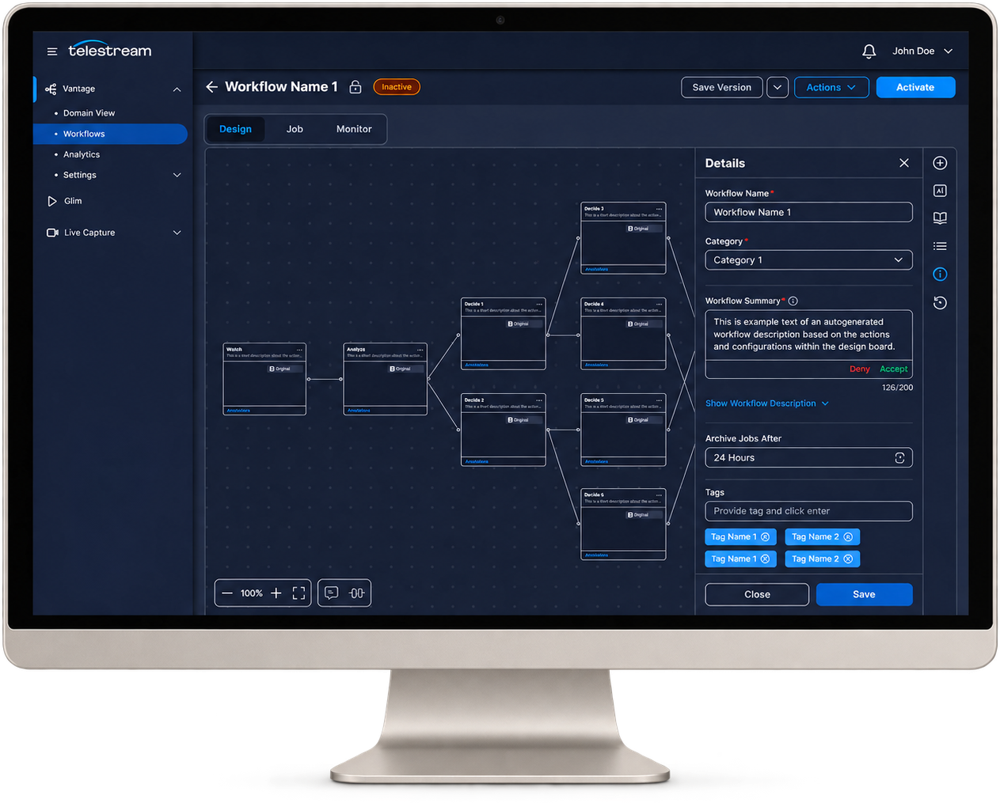
Usability Testing Results
44%faster task completion
Median workflow setup time decreased from 45 to 25 minutes during testing.
57%fewer configuration errors
The observed error rate decreased from 28% to 12% across the tested tasks.
91SUS score
System Usability Scale score from the usability evaluation.
01
The Mandate: Modernize A Powerful Legacy Workflow Tool
Leadership needed to modernize both the product experience and the platform behind it. The interface work shown here addressed the workflow designer; capacity, licensing, storage, security, and cloud infrastructure remained broader product and engineering concerns.
Design Problem
Powerful functionality was difficult to discover and operate
Core actions were hidden.
Configuration relied on layered dialogs.
Failures offered limited guidance.
No dedicated design function.
No structured customer-feedback loop.
Legacy interfaces shaped around technical specifications.
Limited support for remote teams and cloud storage.
02
What I Was Getting Myself Into
With no existing usability research to build on, I audited the core workflows of Vantage, the company’s flagship product. I documented 12 usability issues, including five I rated as major. I treated these findings as initial hypotheses, using them to define the research questions I would investigate with users.
Key Learnings
01
Core actions depended on recall
Important commands were hidden behind a right-click, leaving new users without a visible inventory of what they could do.
02
Configuration lost its context
Stacked dialogs pulled users away from the canvas and made it harder to track which action they were editing.
03
Failures started an investigation
Generic error messages did not identify the affected action or tell users what to check next.
Violations by Severity
12Total Violations
May not be an issue00%
Cosmetic only217%
Minor problem542%
Major problem542%
Catastrophic — fix before release00%
04
Getting To Know Our Users And Competitors
Contextual Inquiry At CBS Studios
We visited CBS Studios to observe how broadcast teams used Vantage in the environment where their work happened. Seeing operators manage multiple feeds, monitoring systems, and specialized equipment made the stakes clear: teams needed an interface that surfaced status quickly, helped them diagnose failures, and improved usability without disrupting the familiar workflows experts relied on during time-sensitive broadcasts.
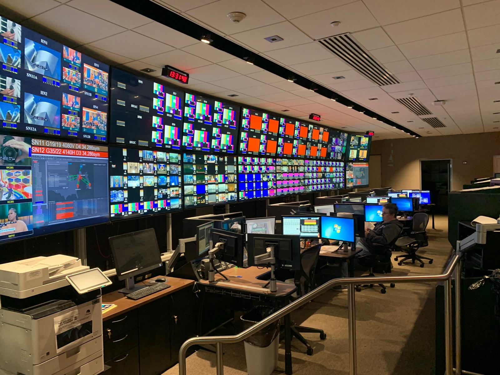
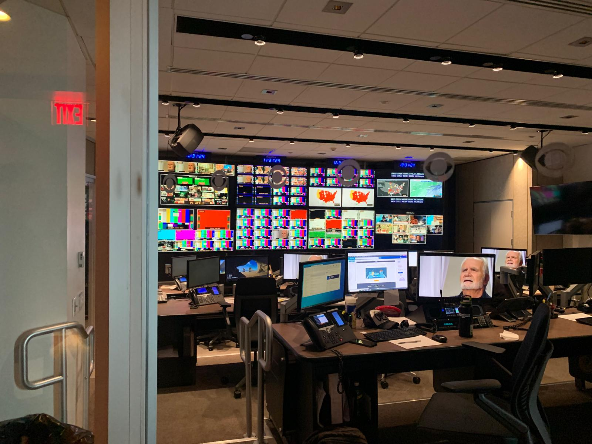
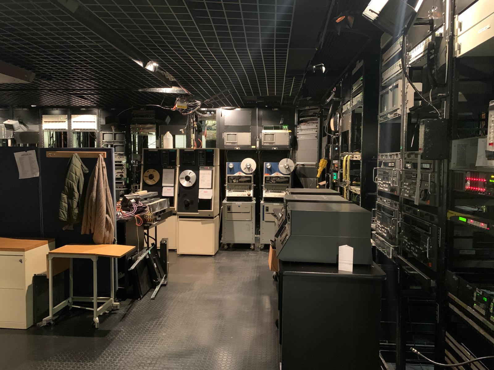
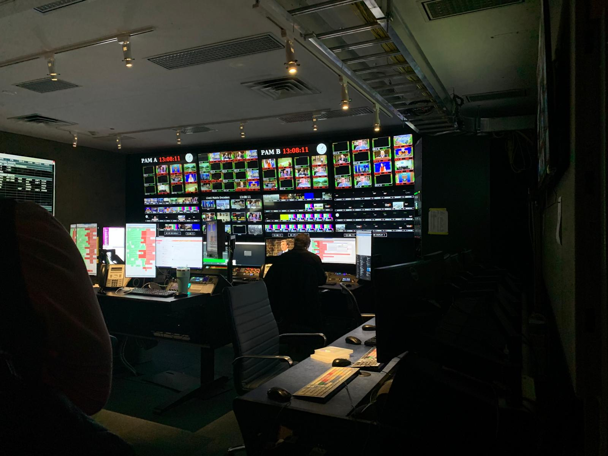
Who The Design Needed To ServeBroadcast and media workflow engineersTechnical specialists responsible for keeping media moving. Experienced engineers needed speed and familiarity; engineers learning the tool needed visible guidance.
Our primary persona is the broadcast and media workflow engineer: highly technical, responsible for keeping live output error-free, and measured on downtime they cannot afford. Their goals were about reducing production time and manual work — their pain points were time-consuming, error-prone manual workflows and the difficulty of integrating and optimising the tools they already had.
Where The Journey Became DifficultFrom requirements to a reliable buildThe journey map concentrated friction around flexible requirements, finding real-world examples, and building with integration risk. These pointed toward guidance, reusable building blocks, and review.
Mapping a veteran engineer building a new transcoding workflow — from becoming aware of the requirement through to reviewing it in production — put the friction in the middle of the journey rather than at either end.
Gathering requirements — balancing flexibility against specificity when configuring Vantage
Research — no real-world examples to work from, so users leaned on forums and support
Building — integration risk and a learning curve steep enough to threaten downtime
What The Competitive Landscape ConfirmedVantage was strong where it mattered and absent where users start.Benchmarking against general-purpose workflow tools showed the gaps clustered around getting started and staying organised: templates, reuse, search, permissions, and community.
Vantage was strong where it mattered and absent where users start. Benchmarking it against general-purpose workflow automation tools showed the gaps clustered around getting started and staying organised — templates, reuse, search, permissions, community — rather than around processing capability.
Feature
Create using template
—
✓
✓
✓
✓
—
Create using generative AI
—
✓
—
—
✓
—
Workflow action suggestions
—
✓
—
—
✓
—
Reusable groups of logic / actions
—
—
—
—
—
—
Sub-folder categories
—
—
—
—
—
—
View version history
—
✓
—
—
✓
✓
Switch between code and no-code
—
✓
—
✓
✓
✓
Permissions and access rules
—
✓
✓
✓
✓
✓
Community library & forum
—
✓
✓
✓
✓
✓
Custom error handling
✓
✓
—
—
—
✓
Workflow analytics
✓
—
✓
—
✓
✓
Workflow notifications
✓
✓
✓
✓
—
✓
Drag and drop workflow actions
✓
✓
✓
✓
✓
✓
Help documentation
✓
✓
✓
✓
✓
✓
03
From Interviews To Design Opportunities
I conducted interviews with 10 engineers who build and manage workflows in legacy Vantage to understand what made creating, updating, and troubleshooting them difficult. We grouped their pain points and feature requests into themes to identify user needs and guide the redesign.
Explore the raw interview synthesis
Key Themes From The Research
01
Understand the whole workflow
Large, branching workflows made it hard to see what was happening and where to make a change.
Evidence & design opportunity
What we heard
The notes describe complex ingest workflows, unpredictable navigation in workflow groups, and a need to follow a media file across multiple workflows.
Design opportunity
Make the workflow structure easier to scan, organize, and navigate. Keep the connection between a file, its job, and its workflow visible.
02
Reuse work that already works
Teams wanted to adapt proven building blocks instead of rebuilding or copying complex workflows.
Evidence & design opportunity
What we heard
Participants asked for reusable groups of actions, templates with adjustable settings, and easier ways to move workflows between test and production environments.
Design opportunity
Support reusable action groups and templates, with clear settings that users can review before applying them.
03
Explain failures in context
An error message was often the start of an investigation, rather than a useful explanation.
Evidence & design opportunity
What we heard
The notes describe vague messages, noisy logs, and difficulty matching an error to the right job or workflow. One request was to troubleshoot a single phase without rerunning everything.
Design opportunity
Show what failed, where it failed, and what to check next, close to the affected action.
04
Make progress easier to trust
Slow responses and unclear status made it harder to tell whether work was progressing or stuck.
Evidence & design opportunity
What we heard
Participants reported slow opening, saving, and validation, along with timeouts and unreliable wait-time metrics. One account described validation taking 15–20 seconds.
Design opportunity
Make processing and save states explicit. Pair clearer feedback with engineering work on responsiveness and reliable monitoring.
05
Make everyday changes safer
A small edit could interrupt work, while recovery and access controls were limited.
Evidence & design opportunity
What we heard
The board records workflow locking during minor edits, requests for undo and version history, and different needs for people building workflows versus monitoring jobs.
Design opportunity
Separate editing from monitoring and explore safer changes through appropriate permissions, version history, and recovery controls.
06
Reduce manual setup with assistance
Participants saw an opportunity to describe a goal and get help configuring the steps.
Evidence & design opportunity
What we heard
Ideas included generating settings from sample media and creating a workflow from a plain-language description. AI and machine learning were discussed as possible approaches.
Design opportunity
Explore AI-assisted setup as a concept to validate. Keep generated steps and settings reviewable before users run them.
The central takeaway
Help teams manage complexity with confidence—and use AI to accelerate setup.
Users struggled with complex workflows, repetitive setup, troubleshooting, and making changes safely, leading us to prioritize clarity, reuse, and easier recovery.
I also identified an opportunity for AI-assisted workflow creation. Users could describe what they needed or provide sample media, then review an AI-generated starting point before running anything, reducing setup effort.
Research also uncovered broader needs around capacity, licensing, security, documentation, and integrations.
05
From Research To A Clearer, More Reusable Workflow System
I translated the research into four connected parts of the experience. Together, they help engineers find work that needs attention, understand complex workflows, reuse proven configurations, and explore AI-assisted setup without giving up control.
Find And Monitor
Research showed that teams needed a faster way to locate workflows and understand what required attention. I separated workflow management from the canvas so operational context appears before editing begins.
Research signal
Finding the right workflow and tracing failures consumed time.
Design response
A dedicated workflow home combines search, filters, status, ownership, and failure counts.
Key features
Workflow home · Search and filters · Failure alerts · Read-only preview · Tags
01
A Dedicated Workflows Home
Workflows get their own landing page, separated from the design canvas and organised by category.
02
Type-Ahead Search And Filtering
Find a workflow by name, or filter by all, active, inactive, archived and failed, instead of scrolling a flat list.
03
Job Failure Alerts
Failure counts and monitor state sit inline on every row, so problem workflows surface on their own.
04
Job Summary Preview
Preview a workflow's design and its job history from the list, without opening it and risking edits.
05
Tagging And Descriptions
Tags improve search and filtering, and workflow descriptions can be auto-generated at creation.
vantage.telestream.com
Build And Troubleshoot
The audit and interviews pointed to the same problem: engineers relied on recall while configuration and errors pulled them out of context. The redesigned canvas makes actions discoverable and links the visual workflow to a searchable outline.
Research signal
Hidden commands, layered dialogs, and unclear failures slowed setup and recovery.
Design response
Guided starting points, a searchable action library, and a linked outline keep work in context.
A blank canvas offers origin actions — Watch, Receive, Capture — so users know where to begin.
02
Recommended Next Actions
Dragging out from a node suggests the actions that most often follow it, instead of leaving users to guess.
03
Searchable Action Library
Every action is visible, searchable, categorised and favouritable — none of it hidden behind a right-click.
04
Outline Panel
Navigate and configure a hundred-action workflow from a searchable list rather than by hunting the canvas.
05
Pre-Activation Error States
Actions missing configuration are flagged in the outline before activation, not after a job fails.
06
Rebuilt Action Configuration
Flip 64 and its peers move to the new design system while keeping the layout experts already know.
vantage.telestream.com
Save And Reuse
Teams repeatedly rebuilt or copied complex workflows. I designed a complete reuse loop so engineers could capture working action groups, describe them, find them later, and apply them safely.
Research signal
Repetitive setup increased effort and made proven configurations difficult to share.
Design response
Reusable action groups connect creation, discovery, application, and central management.
Key features
Group actions · Names and tags · Template library · Drag to canvas · Central management
01
Group Actions Into A Template
Select or drag across any set of actions on the canvas and save the group as a reusable template.
02
Named, Tagged And Described
Templates carry a category, description and tags so they can actually be found later — or overwrite an existing one.
03
Template Library
A library in the side navigation with category organisation and type-ahead search.
04
Drag Straight Onto The Canvas
Drop a template onto the design canvas to start from a workflow that is already wired up and configured.
05
Managed In Settings
Templates live in their own settings view where they can be locked, moved, duplicated or exported deliberately.
vantage.telestream.com
AI-Assisted Setup
Interviews suggested that AI could reduce specialist setup effort. I explored a review-first concept where engineers describe a goal, inspect the generated workflow, and decide whether to apply it.
Research signal
Manual setup demanded substantial domain knowledge and repeated configuration.
Design response
AI creates a reviewable draft rather than making an invisible or irreversible change.
Describe the workflow you need and the system builds a starting point, collapsing the deep domain knowledge the task normally demands.
02
Preview Before You Accept
Generated workflows appear on the canvas in a preview state with explicit deny and accept controls, so nothing is applied without review.
03
Enhance An Existing Workflow
The same prompt field extends workflows already on the canvas rather than only creating from scratch.
04
Auto-Generated Workflow Summaries
A written summary is generated from the actions and configurations on the board, so the next engineer inherits context instead of guesswork.
05
Descriptions For Single Actions
Individual actions can generate their own descriptions, which is what makes the outline panel searchable in the first place.
vantage.telestream.com
06
Validating The Redesigned Workflows
I evaluated representative workflow setup and configuration tasks in UserZoom usability testing with seven participants. The redesigned experience showed improvements in task efficiency and error prevention.
Key Results
7
Participants Interviewed
Seven participants were interviewed as part of the UserZoom usability evaluation.
44%
Faster Task Completion
45 min Before→25 min Redesigned
57%
Fewer Configuration Errors
28% Before→12% Redesigned
91
System Usability Scale Score
The usability evaluation produced a SUS score of 91.
07
What I Delivered And Learned
SimplicityEasier to understand and maintain
Balanced modernization
Expert speedKeep the familiarity engineers rely on
Delivered
Redesigned discovery, building, troubleshooting, and reuse.
Explored review-first AI-assisted setup.
Designed a way to inspect and approve generated work.
Contributed
Audited the existing product.
Interviewed 10 workflow engineers.
Synthesized findings into design priorities.
Created interaction concepts and high-fidelity workflows.
Learned
Modernization does not mean replacing every familiar pattern.
Made hidden actions visible.
Kept complex work in context.
Supported safer review and reuse.
Validate next
Test in realistic operating conditions.
Strengthen error recovery and version history.
Validate AI-assisted concepts before implementation.
Next up
Interview synthesis · Complete FigJam board
Zoom in, then scroll to explore the notes.
Heuristic Evaluation of Vantage
Severity Rating Legend
0May not be an issue
1Cosmetic only
2Minor problem
3Major problem
4Catastrophic — fix before release
1. Visibility of system status
Always keep users informed about what is going on, through appropriate feedback within a reasonable amount of time.
Violation
For nodes that have configurations with multiple steps, we don't show the user how many steps they need to go through.
Recommendation
Introduce some kind of indicator or progress stepper that shows how far along the user is in configuring their nodes, and how many more steps remain.
3
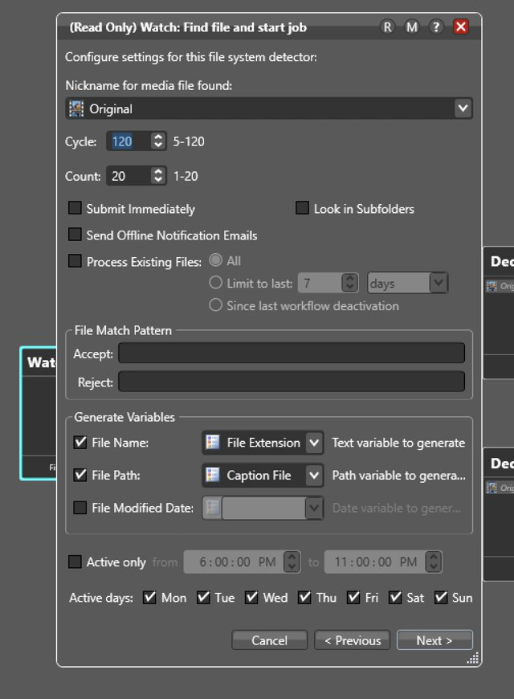
Violation
When a workflow is processing a file, the status colors are confusing: blue communicates the job is complete, and green communicates it's still in progress — the reverse of what users expect.
Recommendation
Reassign the colors so they match convention: green communicates completed or done, and blue communicates in progress.
1
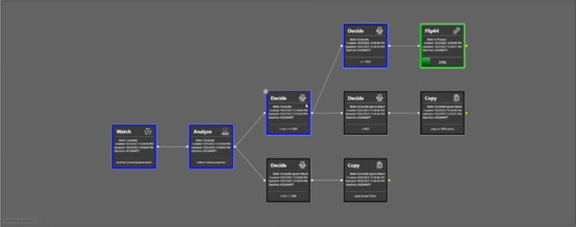
Violation
Nodes still lack information about what configurations were made. This requires the user to drill into each node to understand its configuration.
Recommendation
Give users a way to review a node's selected configuration without drilling into it — for example, a hover or click affordance that surfaces a quick summary.
2
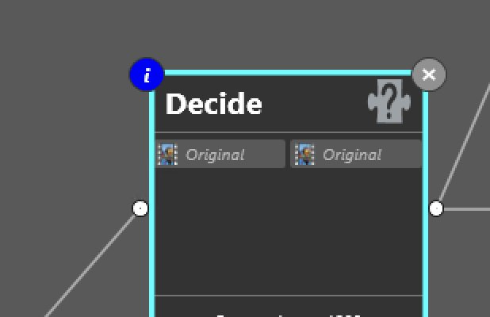
2. Match between system and real world
Use words, phrases, and concepts familiar to the user, rather than internal jargon, and follow real-world conventions that present information in a natural and logical order.
Violation
When creating variables in Decision nodes, there's no clear call to action showing the user where to click to add a new variable — just an icon that's hard to decipher. Primary CTAs shouldn't be hidden behind indistinguishable icons.
Recommendation
Use a highlighted CTA for primary actions so it's obvious to new users where to click. Hiding a primary action behind an icon isn't best practice.
2
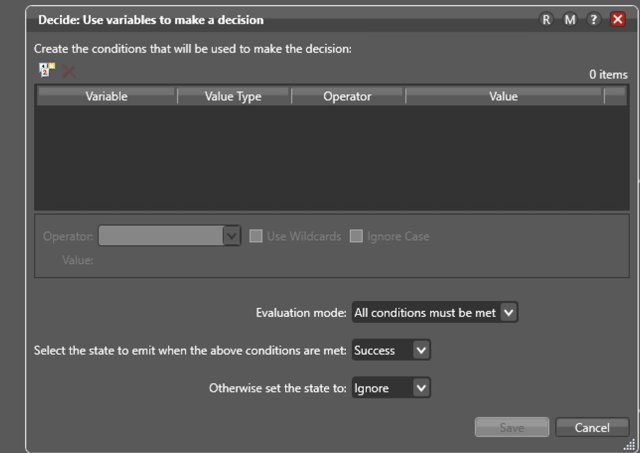
3. User control and freedom
Users often perform actions by mistake. They need a clearly marked “emergency exit” to leave the unwanted action without having to go through an extended process.
Violation
When deleting a configuration within a node (for example, the Analyze node), the user gets no final warning before the change is deleted — even though it can affect the whole design workflow.
Recommendation
For destructive actions like deleting, show a confirmation warning before committing. An undo affordance would also let users recover from a mistaken delete.
3
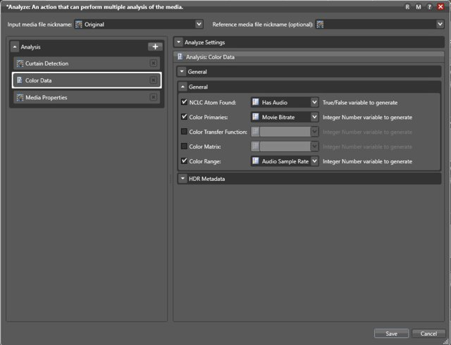
4. Consistency and standards
Maintain internal and external consistency (i.e., words, situations, and actions mean the same thing within the system, and are also consistent when compared with other similar systems).
Violation
The “Domain Monitor Status” tab gives a global view of all workflow activity in Vantage, but it sits next to the “Job Status” tab, which only shows activity for the current workflow — confusing the two tabs' hierarchy and placement.
Recommendation
Isolate “Domain Monitor Status” so it sits above all individual workflows in the hierarchy, matching how other applications separate global activity from single-job status.
2
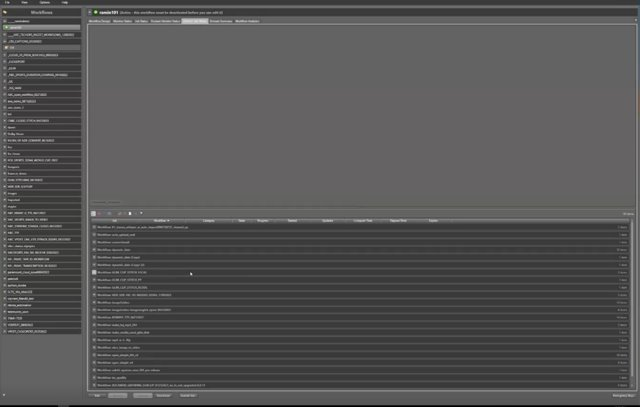
Violation
When reviewing a configuration in read-only mode, every control still shows the same affordances as an editable one, so users think they can change the options — there's no distinct read-only view.
Recommendation
Build a dedicated read-only state for every configuration view, and avoid opening it over the modal where the original action was taking place.
3
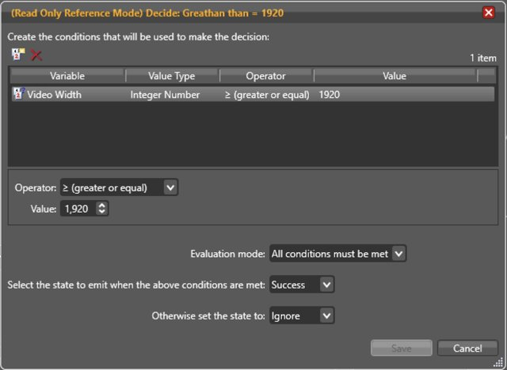
5. Error prevention
Good error messages are important, but the best designs carefully prevent problems from occurring in the first place. Either eliminate error-prone conditions, or check for them and present users with a confirmation option before they commit to the action.
Violation
The system does show a persistent-looking error message when an incorrect selection is made, but it disappears after a moment and the value quietly reverts to a default — easy for a user to miss entirely.
Recommendation
Keep the error state visible until the user actually resolves it with a correct value, instead of silently reverting and letting them move on unaware.
3
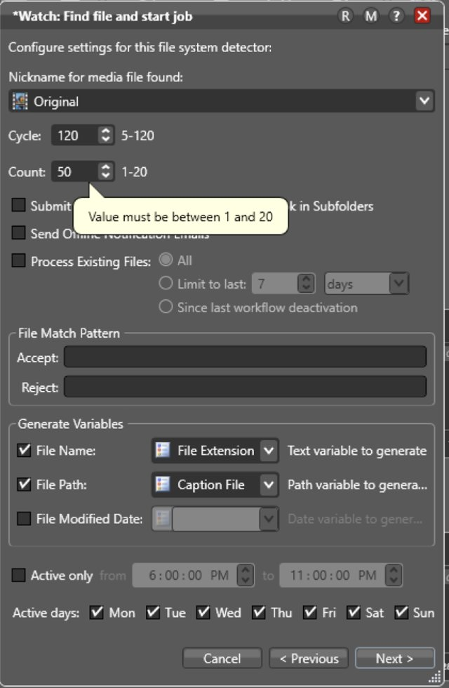
6. Recognition rather than recall
Information required to use the design should be visible or easily retrievable when needed (users should not have to remember information from one part of the interface to another).
Violation
So many core functions of each node in Vantage are hidden behind a right-click. That isn't always intuitive for new users trying to find a specific action.
Recommendation
Surface the actions available for each node directly, so users can scan what's possible instead of remembering what's buried behind a right-click. Visible actions also signal what's clickable in the first place.
2
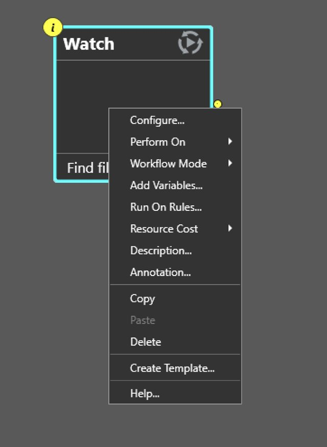
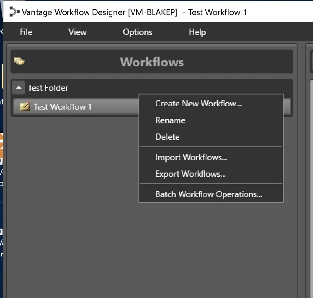
Violation
Too many modals open one over another when configuring a single node. Users can lose track of which node they're actually working on and get pulled away from their original task.
Recommendation
Show a node's configuration without burying it under multiple stacked modals — for example, a slide-out panel beside the highlighted node, so it stays clear which one is being edited.
2
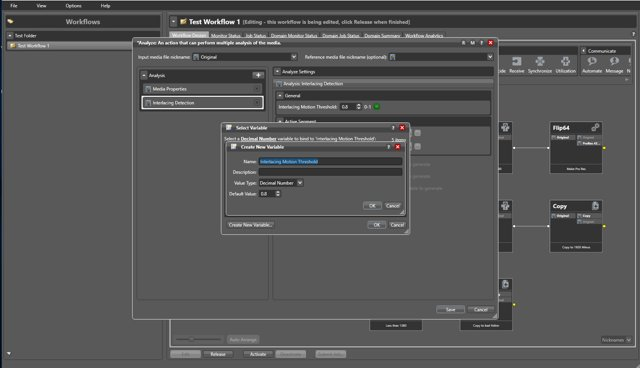
7. Flexibility and efficiency of use
Shortcuts — hidden from novice users — may speed up the interaction for the expert user such that the design can cater to both inexperienced and experienced users. Allow users to tailor frequent actions.
Violation
There's no pinch-to-zoom on the workspace canvas. Users have to use the zoom toggle in the corner instead — a missed opportunity to match a behavior already familiar from other applications.
Recommendation
Look to applications like Figma or Illustrator for the canvas mouse behaviors users already expect on a blank-canvas type of tool.
1
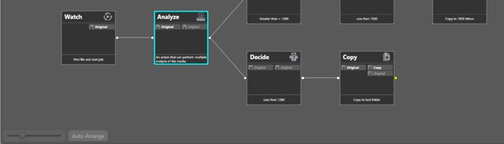
8. Aesthetic and minimalist design
Keep the content and visual design of the UI focused on the essentials. Use progressive disclosure to de-emphasize irrelevant or rarely used elements until they are needed.
No violations logged against this heuristic.
9. Help users recognize, diagnose, and recover from errors
Error messages should be expressed in plain language (no error codes), precisely indicate the problem, and constructively suggest a solution.
Violation
When an active workflow's job fails, the user gets a generic failure message with no information on how to diagnose or resolve it. They then have to re-enter edit mode, find the node highlighted red, and review every configuration to find the cause — a slow, tedious process.
Recommendation
Surface the specific cause of the failure instead of a generic message, and let users fix the error on the same screen rather than re-tracing the whole workflow to find it.
3
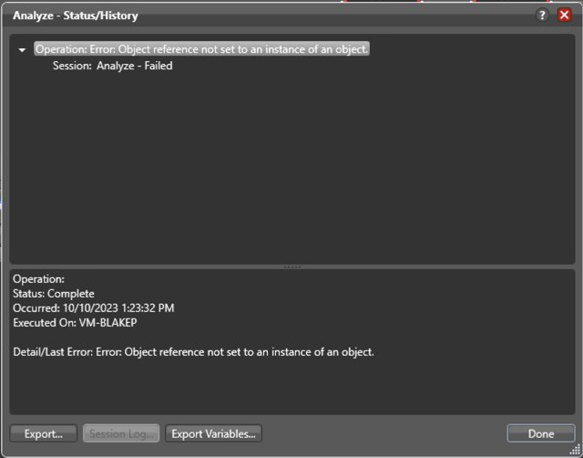
10. Help and documentation
It's best if the system doesn't need any additional explanation. However, it may be necessary to provide documentation to help users understand how to complete their tasks.